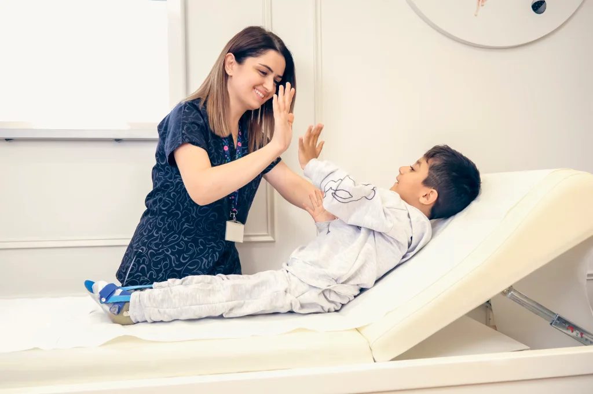

Nos services
Une technologie sérieuse ne se limite pas à être installée. Aulia Care accompagne les établissements dans l’analyse, le déploiement, l’intégration, la formation et l’évolution de leur environnement numérique.

Étude & cadrage
Nous analysons l’organisation, les flux, les utilisateurs et les contraintes de l’établissement afin de préparer un déploiement cohérent d’Aulia Care.

Déploiement & configuration
Aulia Care est configurée selon la structure réelle de l’établissement, ses services, ses rôles et son organisation avant sa mise en production.
Intégration & interopérabilité
Nous préparons la connexion d’Aulia Care avec les systèmes, équipements et services tiers compatibles afin d’éviter de créer un nouveau silo numérique.

Formation des équipes
Chaque profil apprend à utiliser Aulia Care selon ses responsabilités réelles afin que la technologie soit comprise, adoptée et correctement exploitée.

Assistance & continuité
Après la mise en production, l’accompagnement continue pour traiter les incidents, répondre aux besoins opérationnels et préserver la continuité d’utilisation.
Évolution & intelligence
Nous accompagnons l’évolution progressive de l’écosystème, de Core vers les capacités d’IA et de Connected Care, selon les besoins et la maturité de l’établissement.